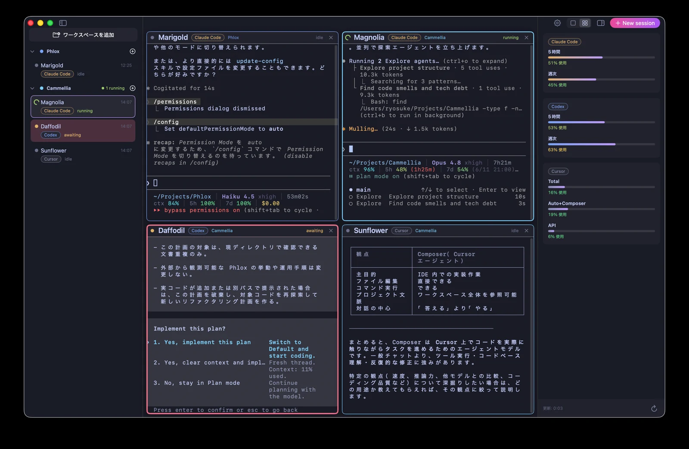

1画面に、すべてのエージェント
Codex・Cursor・Claude Code が、それぞれ専用のライブ・ターミナルペインで並列に動作。タブを行き来せず、アプリ間で文脈を失うこともありません。
Claude Code
Codex
Cursor
Phlox は Codex・Cursor・Claude Code を1つのネイティブ macOS コックピットで並列に動かします。セッションを spawn し、タスクを委譲し、結果を統合する — すべて1画面で。

Mac 上のすべてのコーディングエージェントを、1つのネイティブ・コックピットに。spawn し、見守り、協調させる。
Codex・Cursor・Claude Code が、それぞれ専用のライブ・ターミナルペインで並列に動作。タブを行き来せず、アプリ間で文脈を失うこともありません。
各エージェントのクォータを Inspector に。5時間・週次・合計の上限で。
セッションを spawn して指示を送ったら、あとは任せるだけ。完了は Stop フックで自動検知し、結果を統合します。
セッション間メッセージングで作業を引き継ぎ、文脈を共有。複数エージェントが1つのタスクで協調します。
実行中・待機・入力待ちを自動検知（Codex のプロンプト待ちも含む）。通知とプラン承認プロンプトで、見えないまま止まることがありません。
ワークスペースでセッションをまとめ、グリッドを絞り込み、表示モードを切替（⌃⌘G）、サイドバーをトグル（⌘B）。あなたの思うままのコックピットに。